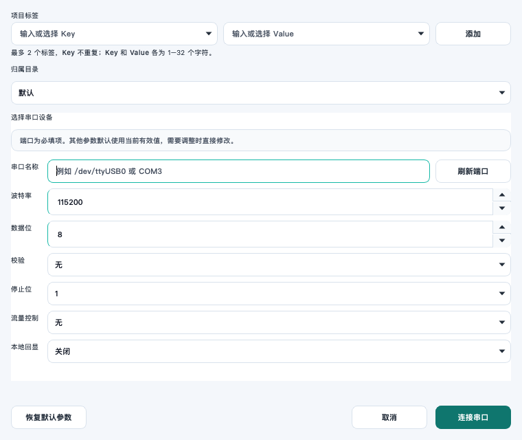
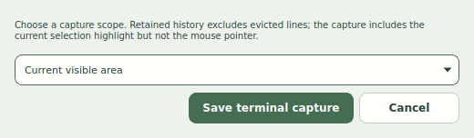
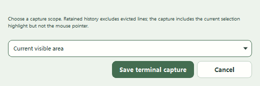

XTermPro 串口连接与模拟测试指南
使用本机串口与设备交互，或在没有实体设备时用 PTY 或虚拟 COM 对验证收发、断开和重连。
适用平台为 macOS、Linux 和 Windows。更新于 。
配置串口连接
串口连接打开本机设备并在终端标签页收发数据。标签页提供连接设置、断开、重新连接、文本记录、查看记录、截图，以及与兼容对端配合使用的 X/Y/ZMODEM 文件传输。
各平台确认设备名称
| 平台 | 操作步骤 | 输入示例 |
|---|---|---|
| macOS | 接入适配器后在终端运行 ls /dev/cu.*。对比接入前后的列表，选择与适配器对应的设备；USB 转串口通常使用 /dev/cu.*。 | /dev/cu.usbserial-XXXX |
| Linux | 接入后运行 ls /dev/ttyUSB* /dev/ttyACM* /dev/serial/by-id/* 2>/dev/null。如有对应的 by-id 路径可优先使用。用 ls -l 查看设备的访问权限。 | /dev/ttyUSB0 或 /dev/ttyACM0 |
| Windows | 打开“设备管理器 → 端口（COM 和 LPT）”，查看设备名称后的 COM 编号。也可在 PowerShell 运行 [System.IO.Ports.SerialPort]::GetPortNames() 列出端口。 | COM3 |
在 XTermPro 中打开

- 打开文件 → 新建 Serial 串口连接，将上一步的设备名称填入串口名称。
- 按对端设备规格设置波特率、数据位、校验、停止位和流量控制。模拟测试统一用 38400、8N1、无流控、关闭本地回显。
- 点击连接串口。应用保存会话并打开标签页。等状态显示已连接，再点击终端区域输入数据。
- 临时停止时点击断开，设备可用后点击重新连接。如果设备路径或 COM 编号变了，先通过连接设置更新端口。也可以从会话树重新打开已保存的连接。
新建表单显示当前有效默认值，改动的参数写入会话。全局设置改变后，仍继承全局值的会话会在重新打开或连接时使用新的默认值。
通信参数
| 字段 | 内置默认 | 说明 |
|---|---|---|
| 串口名称 | 空 | 必填。输入平台设备路径或 Windows COM 编号。 |
| 波特率 | 38400 | 串口传输速率。按设备说明设置，例如 9600、38400 或 115200，具体值取决于设备和驱动。 |
| 数据位 | 8 | 每个字符的有效数据位数，可选 5 至 8。二进制文件传输要求 8 位。 |
| 校验 | 无 | 可选无、偶校验、奇校验、空格（Space，校验位恒为 0）或标记（Mark，恒为 1）。 |
| 停止位 | 1 | 每个字符结束时的停止位长度，可选 1、1.5 或 2。驱动和数据位组合可能限制可用选项。 |
| 流量控制 | 无 | 硬件通常用 RTS/CTS，软件通常用 XON/XOFF。X/Y/ZMODEM 透明传输要求关闭软件流控。 |
| 本地回显 | 关闭 | 开启后，发送的字符也在本机显示。对端已回显时保持关闭，以免重复显示。 |
8N1 表示 8 数据位、无校验、1 停止位。串口双方应使用相同通信参数；设备或驱动拒绝设置时，应用会报告失败。
macOS 和 Linux 使用 PTY 模拟
需要已安装的 XTermPro 和 Python 3。下载 PTY 回显脚本，在终端切换到脚本所在目录，再运行下面的命令。
python3 run_demo_device.py- 保持脚本运行，复制第一行打印的设备路径。macOS 通常形如
/dev/ttysNNN，Linux 通常形如/dev/pts/N。使用本次打印值。 - 在 XTermPro 按上面的“连接配置”创建连接，端口填该路径，参数设为 38400、8N1、无流控、本地回显关闭。
- 点击终端并输入
hello。看到simulated>和自己发送的字符即可确认回程。脚本按收到的数据块回送，逐字键入时可能出现多次前缀。 - 保持脚本运行，点断开再点重新连接，改用
resume检查回程恢复。 - 另做一次异常断开。连接期间在脚本窗口按 Ctrl+C，观察应用结束连接。重新启动脚本后，用它本次打印的路径更新连接设置再连接，并复测回显。
完成后关闭测试会话和脚本。PTY 由系统回收。

Windows 使用虚拟 COM 对模拟
需要 Windows 版 XTermPro，以及与 Windows 架构匹配的虚拟串口驱动。下例使用已安装的 HHD Virtual Serial Port Tools。在管理员 PowerShell 中确认 COM73 和 COM74 均空闲后，创建本次专用的本地桥接。已有可用测试桥时可直接使用它，并替换下方两个编号。
$cli = 'C:\Program Files\HHD Software\Virtual Serial Port Tools\rspcli.exe'
[System.IO.Ports.SerialPort]::GetPortNames()
& $cli -create bridge --bridge-ports '73,74' --device-name XTermProSerialFixture
& $cli -list bridge桥接列表应显示 COM73 <-> COM74。在 XTermPro 中打开 COM73，用 38400、8N1、无流控、关闭本地回显。在另一 PowerShell 窗口下载并运行虚拟 COM 对端脚本，把 COM74 当作对端。
.\windows-serial-peer.ps1 -Port COM74 -BaudRate 38400- 第一次读到
app-to-peer，并在 XTermPro 看到peer-to-app，表示两个方向都通。 - 重连后对端读到
app-reconnected，XTermPro 看到peer-reconnected，表示同一连接重开后两个方向均恢复。若读取时数据尚未到达，保持对端打开并重新检查或发送测试文本。 - 完成后关闭 XTermPro 测试会话和对端。若无需保留测试桥，用驱动管理工具删除本次创建的桥。
如果结束对端脚本，虚拟 COM 桥仍可用。下次测试时重新打开对端脚本即可。 虚拟串口驱动命令参考

常见问题
| 现象 | 检查方法 |
|---|---|
| 端口找不到 | 重新确认设备路径或 COM 编号。用虚拟机时确认设备在运行 XTermPro 的来宾内可见。 |
| 拒绝访问或端口忙 | 关闭占用同一端口的串口工具或其他会话。Linux 再检查当前账户是否有设备读写权限。 |
| 乱码或无回程 | 核对两端波特率、8N1 和流控；确认双方使用桥接的不同端点。PTY 测试确认脚本仍在运行。 |
| 文件传输不可用 | 确认已连接、使用 8 数据位且无软件流控。先让对端进入匹配的 X/Y/ZMODEM 发送或接收状态。 |